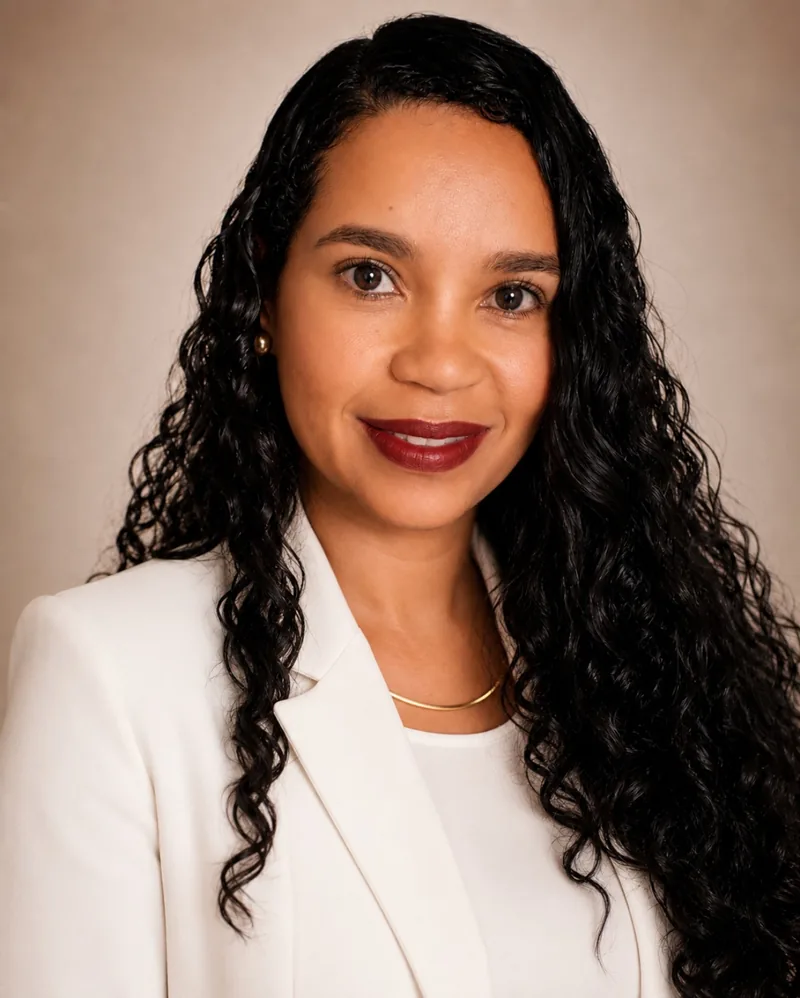

O que a ciência mostra sobre massa muscular na vida adulta, e o que fazer a partir de hoje.
de massa muscular por década é a perda estimada a partir dos 30 anos em adultos sem estímulo adequado. Depois dos 60, o ritmo acelera.
E a força costuma cair mais rápido que a massa. Por isso, músculo se constrói antes de precisar dele.
Volpi E et al. Curr Opin Clin Nutr Metab Care, 2004.
A boa notícia: quase tudo isso é modificável.
Sem estímulo mecânico, nenhuma proteína ou suplemento constrói músculo.
2 a 3 vezes por semana, grandes grupos musculares e progressão de carga ao longo do tempo.
Caminhada e corrida fazem bem ao coração, mas não substituem a musculação.
Orientação do treino: profissional de Educação Física.
Para quem treina, a evidência aponta para 1,2 a 1,6 g por kg de peso ao dia, distribuídos em 3 a 4 refeições de 25 a 40 g.
Mulher de 65 kg: cerca de 80 a 105 g de proteína por dia.
A meta é individual. Doença renal ou outras condições exigem avaliação.
Morton RW et al. Br J Sports Med, 2018 · Schoenfeld BJ, Aragon AA. JISSN, 2018.
| Café | 2 ovos + iogurte natural + aveia | ~25 g |
| Almoço | 120 g de frango + feijão | ~40 g |
| Lanche | Iogurte proteico ou whey | ~20 g |
| Jantar | 120 g de peixe + legumes | ~30 g |
Total: ~115 g. O erro mais comum é um café da manhã com quase nenhuma proteína.
Valores aproximados. Quantidades dependem do seu peso, rotina e objetivo.
Em dietas sem treino de força, cerca de um quarto do peso perdido pode ser massa magra. Isso vale também para quem usa medicamentos para emagrecer.
Por isso, o acompanhamento precisa olhar composição corporal, não só o número da balança.
Weinheimer EM et al. Nutr Rev, 2010.
Salve este post e envie para quem precisa ler.
Quer um plano para a sua composição corporal? Agende pelo link da bio.
